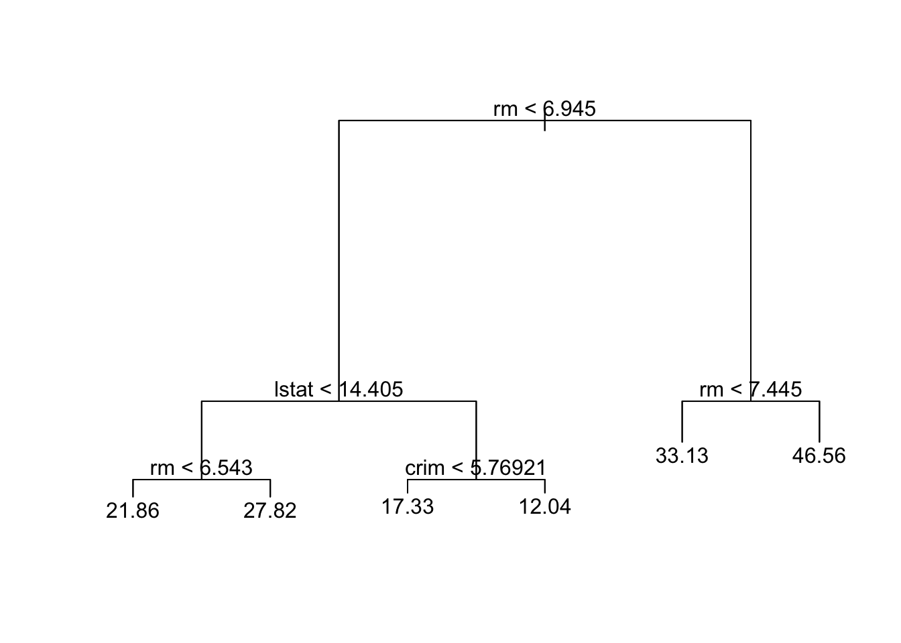
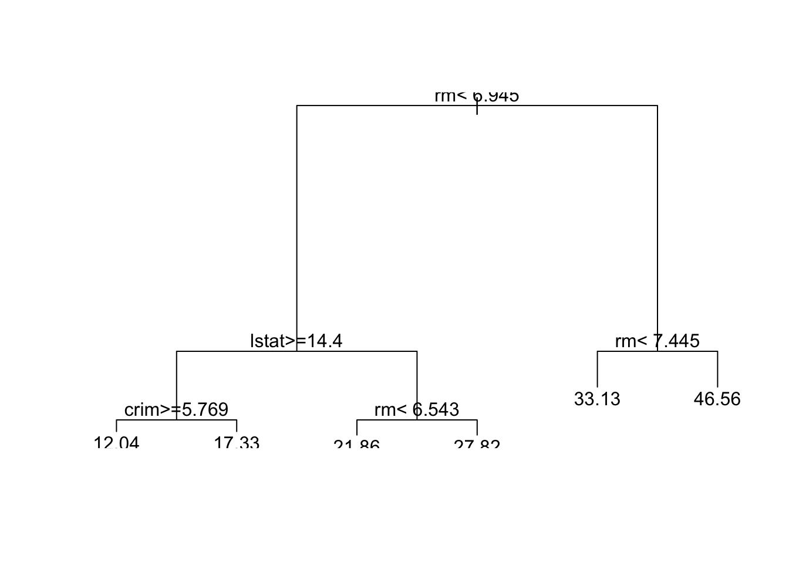
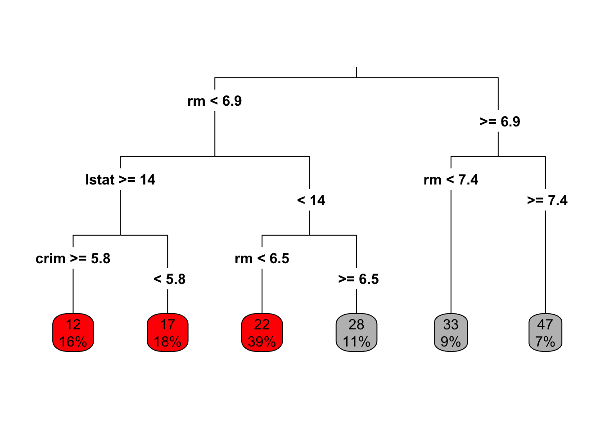

MA8701 Advanced methods in statistical inference and learning
Part 3: Ensembles. L13: Bagging - trees - random forests
Part 3: Ensembles
Literature this lecture (L13)
- [ESL] The Elements of Statistical Learning: Data Mining, Inference, and Prediction, Second Edition (Springer Series in Statistics, 2009) by Trevor Hastie, Robert Tibshirani, and Jerome Friedman. Ebook. Chapter 8.7 (bagging), 9.2 (trees), 15 (random forest, not 15.3.3 and 15.4.3).
Topics in this lecture
Wisdom of the crowds: Vox populi


What is a wise crowd?
James Surowiecki: The Wisdom of Crowds: Why the Many Are Smarter Than the Few and How Collective Wisdom Shapes Business, Economies, Societies and Nations, 2004 as presented at https://en.wikipedia.org/wiki/The_Wisdom_of_Crowds
- Diversity of opinion: Each person should have private information even if it is just an eccentric interpretation of the known facts. (Chapter 2)
- Independence: People’s opinions are not determined by the opinions of those around them. (Chapter 3)
- Decentralization: People are able to specialize and draw on local knowledge. (Chapter 4)
- Aggregation: Some mechanism exists for turning private judgements into a collective decision. (Chapter 5)
- Trust: Each person trusts the collective group to be fair. (Chapter 6)

How can we construct wise crowds for prediction?
–
Bagging
(bootstrap aggregation)
- What is it?
- Why is it a good idea?
- Connect to Part 1: OOB
- When to use it?
What is it?
Why is it a good idea?
Connect to Part 1: Out-of-bag error estimation
- We use a subset of the observations in each bootstrap sample. We know that the probability that an observation is in the bootstrap sample is approximately \(1-e^{-1}\)=0.6321206 (0.63212).
- when an observation is left out of the bootstrap sample it is not used to build the tree, and we can use this observation as a part of a “test set” to measure the predictive performance and error of the fitted model, \(f^{*b}(x)\).
In other words: Since each observation \(i\) has a probability of approximately 2/3 to be in a bootstrap sample, and we make \(B\) bootstrap samples, then observation \(i\) will be outside the bootstrap sample in approximately \(B/3\) of the fitted trees.
The observations left out are referred to as the out-of-bag observations, and the measured error of the \(B/3\) predictions is called the out-of-bag error.
When should we use bagging?
Breiman originally contructed bagging for classification and regression trees! Aim: combat the high variance of trees!
Bagging can be used for many types of predictors in addition to trees (regression and classification) according to Breiman (1996):
- the vital element is the instability of the prediction method
- if perturbing the learning set can cause significant changes in the predictor constructed, then bagging can improve accuracy.
Breiman (1996) suggests that these methods should be suitable for bagging:
- neural nets, classification and regression trees, subset selection in linear regression
however not nearest neighbours - since
- the stability of nearest neighbour classification methods with respect to perturbations of the data distinguishes them from competitors such as trees and neural nets.
Review of trees - through 4 questions
1) From non-overlapping regions in predictor space to a roted decision tree
Draw the binary decision tree corresponding to the predictor space regions. Mark root, branch, internal node, leaf node.

2) Tree prediction: what are the missing estimates?
Regression
\[\hat{f}(X_i)=\sum_{m=1}^M \hat{c}_m I(X_i \in R_m)\] where \(\hat{c}_m\) is the estimate for region \(R_m\).
Classification
- Majority vote: Predict that the observation belongs to the most commonly occurring class of the training observations in \(R_m\).
- Estimate the probability that an observation \(x_i\) belongs to a class \(k\), \(\hat{p}_{mk}(x_i)\), and then classify according to a threshold value.
Regression: the mean of the responses for the training observations that fall into \(R_j\). \[\hat{c}_m=\text{ave}(y_i \mid x_i \in R_m)\]
Classification: proportion of class \(k\) training observations in region \(R_j\), with \(n_{mk}\) observations. Region \(m\) has \(N_m\) observations. \[\hat{p}_{mk} = \frac{1}{N_m} \sum_{i:x_i \in R_m} I(y_i = k)=\frac{n_{mk}}{N_m}.\]
3) Recursive binary splitting
- We look for a split point \(s\) on variable \(j\). What to minimize?
- Why recursive binary splitting?
- When to stop growing a tree?
Regression
\[\min_{j,s} [ \min_{c_1}\sum_{i: x_i \in R_1(j,s)}(y_i-c_1)^2+\min_{c_2} \sum_{i: x_i \in R_2(j,s)}(y_i -c_2)^2]\]
Classification
Some measure of impurity of the node. For leaf node (region) \(m\) and class \(k=1,\ldots, K\):
Gini index: \[ G=\sum_{k=1}^K \hat{p}_{mk}(1-\hat{p}_{mk}), \]
Cross entropy: \[ D=-\sum_{k=1}^K \hat{p}_{mk}\log\hat{p}_{mk} \] Here \(\hat{p}_{mk}\) is the proportion of training observation in region \(m\) that are from class \(k\).
Remark: the deviance is a scaled version of the cross entropy. \(-2\sum_{k=1}^K n_{mk} \log\hat{p}_{mk}\) where \(\hat{p}_{mk}=\frac{n_{mk}}{N_m}\). Ripley (1996, page 219).
When making a split in our classification tree, we want to minimize the Gini index or the cross-entropy.
The Gini index can be interpreted as the expected error rate if the label is chosen randomly from the class distribution of the node. According to Ripley (1996, page 217) Breiman et al (CART) preferred the Gini index.
4) Pros and cons of trees
Advantages (+) of using trees
- Trees automatically select variables
- Tree-growing algorithms scale well to large \(n\), growing a tree greedily
- Trees can handle mixed features (continuouos, categorical) seamlessly, and can deal with missing data
- Small trees are easy to interpret and explain to people
- Some believe that decision trees mirror human decision making
- Trees can be displayed graphically
- Trees model non-linear effects
- Trees model interactions between covariates
- Trees handle missing data in a smart way!
- Outliers and irrelevant inputs will not affect the tree.
There is no need to specify the functional form of the regression curve or classification border - this is found by the tree automatically.
Disadvantages (-) of using trees
- Large trees are not easy to interpret
- Trees do not generally have good prediction performance (high variance)
- Trees are not very robust, a small change in the data may cause a large change in the final estimated tree
- Trees do not produce a smooth regression surface.
Handling missing covariates in trees
Instead of removing observation with missing values, or performing single or multiple imputation, there are two popular solutions to the problem for trees:
Make a “missing category”
If you believe that missing covariates behave in a particular way (differently from the non-missing values), we may construct a new category for that variable.
Use surrogate splits
The best split at a node is called the primary split.
An observation with missing value for variable \(x_1\) is dropped down the tree, and arrive at a split made on \(x_1\).
A “fake” tree is built to predict the split, and the observation follows the predicted direction in the tree. This means that the correlation between covariates are exploited - and the higher the correlation between the primary and predicted primary split - the better.
This is called a surrogate split.
If the observation is missing the surrogate variable, there is also a back-up surrogate variable that can be used (found in a similar fashion.)
If the surrogate variable is not giving more information than following the majority of the observations at the primary split, it will not be regarded as a surrogate variable.
The R package rpart vignette page 18 gives the following example:
- Assume that the split (age <40, age ≥40) has been chosen.
- Surrogate variables are found by re-applying the partitioning algorithm (without recursion=only one split?) to predict the two categories age <40 vs. age ≥40 using the other covariates.
- Using “number of misclassified”/“number of observations” as the criterion: the optimal split point is found for each covariate.
- A competitor is the majority rule - that is, go in the direction of the split where the majority of the training data goes. This is given misclassification error min(p, 1 − p) where p = (# in A with age < 40) / nA.
- A ranking of the surrogate variables is done based on the misclassification error for each surrogate variable, and variables performing better than the majority rule is kept.
Regression example: Boston housing
James et al. (2013) Section 8.3.4.
Information from https://www.cs.toronto.edu/~delve/data/boston/bostonDetail.html.
- Collected by the U.S Census Service concerning housing in the area of Boston Massachusetts, US.
- Two tasks often performed: predict nitrous oxide level (nox), or predict the median value of a house with in a “town” (medv).
Variables
- CRIM - per capita crime rate by town
- ZN - proportion of residential land zoned for lots over 25,000 sq.ft.
- INDUS - proportion of non-retail business acres per town.
- CHAS - Charles River dummy variable (1 if tract bounds river; 0 otherwise)
- NOX - nitric oxides concentration (parts per 10 million)
- RM - average number of rooms per dwelling
- AGE - proportion of owner-occupied units built prior to 1940
- DIS - weighted distances to five Boston employment centres
- RAD - index of accessibility to radial highways
- TAX - full-value property-tax rate per $10,000
- PTRATIO - pupil-teacher ratio by town
- B - #1000(Bk - 0.63)^2# where Bk is the proportion of African Americans by town (black below)
- LSTAT - % lower status of the population
- MEDV - Median value of owner-occupied homes in $1000’s (seems to be a truncation)
Data
Boston data used from the MASS R package. Data are divided into a training and a test set with 70/30 split.
[1] "crim" "zn" "indus" "chas" "nox" "rm" "age"
[8] "dis" "rad" "tax" "ptratio" "black" "lstat" "medv" crim zn indus chas nox rm age dis rad tax ptratio black lstat
1 0.00632 18 2.31 0 0.538 6.575 65.2 4.0900 1 296 15.3 396.90 4.98
2 0.02731 0 7.07 0 0.469 6.421 78.9 4.9671 2 242 17.8 396.90 9.14
3 0.02729 0 7.07 0 0.469 7.185 61.1 4.9671 2 242 17.8 392.83 4.03
4 0.03237 0 2.18 0 0.458 6.998 45.8 6.0622 3 222 18.7 394.63 2.94
5 0.06905 0 2.18 0 0.458 7.147 54.2 6.0622 3 222 18.7 396.90 5.33
6 0.02985 0 2.18 0 0.458 6.430 58.7 6.0622 3 222 18.7 394.12 5.21
medv
1 24.0
2 21.6
3 34.7
4 33.4
5 36.2
6 28.7Code
tree.boston=tree(medv~.,Boston,subset=train)
summary(tree.boston); plot(tree.boston)
Regression tree:
tree(formula = medv ~ ., data = Boston, subset = train)
Variables actually used in tree construction:
[1] "rm" "lstat" "crim"
Number of terminal nodes: 6
Residual mean deviance: 14.86 = 5172 / 348
Distribution of residuals:
Min. 1st Qu. Median Mean 3rd Qu. Max.
-11.36000 -2.25600 -0.04933 0.00000 2.16700 28.14000 Code
text(tree.boston,pretty=0)
node), split, n, deviance, yval
* denotes terminal node
1) root 354 32270.0 22.95
2) rm < 6.945 296 10830.0 19.82
4) lstat < 14.405 177 3681.0 23.17
8) rm < 6.543 138 1690.0 21.86 *
9) rm > 6.543 39 908.2 27.82 *
5) lstat > 14.405 119 2215.0 14.84
10) crim < 5.76921 63 749.9 17.33 *
11) crim > 5.76921 56 636.1 12.04 *
3) rm > 6.945 58 3754.0 38.92
6) rm < 7.445 33 749.7 33.13 *
7) rm > 7.445 25 438.0 46.56 *Code
boston.rpart <- rpart(formula = medv~. , data = Boston,subset=train)
plot(boston.rpart)
text(boston.rpart,pretty=0)

Look at the Boston default tree with tree and rpart to see how the two handles ONE missing value that we have CONSTRUCTED
[1] "tree package" crim zn indus chas nox rm age dis rad tax ptratio black lstat medv
1 0.00632 18 2.31 0 0.538 6.575 65.2 4.09 1 296 15.3 396.9 NA 24 1
19.8223 [1] "rpart package" 1
27.82308 Other issues
Hastie, Tibshirani, and Friedman (2009) 9.2.4
- Categorical predictors: For a predictor with \(q\) levels (may be unordered) the number of possible partitions into two groups is large. A trick is used in the processing, where first dummy variable coding is performed then sorted by increasingly popular categories into a ordered categorical variable. Proofs exists that this gives optimal splits for cross-entropy, Gini, squared loss (see ESL page 310 for references).
- Categorical predictors with many levels may have a advantage for the splits, because there are so many possible splits that often one is very good. This may lead to overfitting if \(q\) is large.
- For multiclass problems loss matrices may be included easily in the Gini loss.
- Binary splits: multiway splits into more than two groups is possible, but may fragment the data very quickly (too quickly). Multiway splits is achived by a series of binary splits. Thus, we stay with binary splits.
- Due to the binary splits it may be hard to model an additive structure.
- Linear combination splits: is possible by including also finding linear weight parameters for the splits. This may improve predictive power, but hurt interpretability.
- There exists other tree-building procedures than CART. One such is C5.0 by Quinlan, see ESL page 312 for reference.
- For regression trees the regression surface will be non-smooth, which may degrade performance. For classification trees where there response is a classification (and thus not smooth) this is not a large problem.
Questions
- Why do we say that trees can automatically handle (and find?) non-linearities? Give example.
- Same, but now interactions in data. Give example.
- Discuss the bias-variance tradeoff of a regression tree when increasing/decreasing the number of terminal nodes, i.e What happens to the bias? What happens to the variance of a prediction if we reduce the tree size?